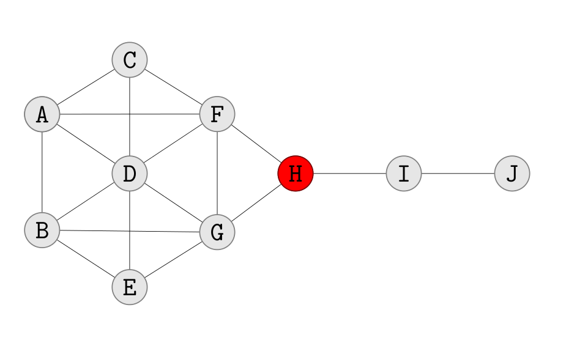
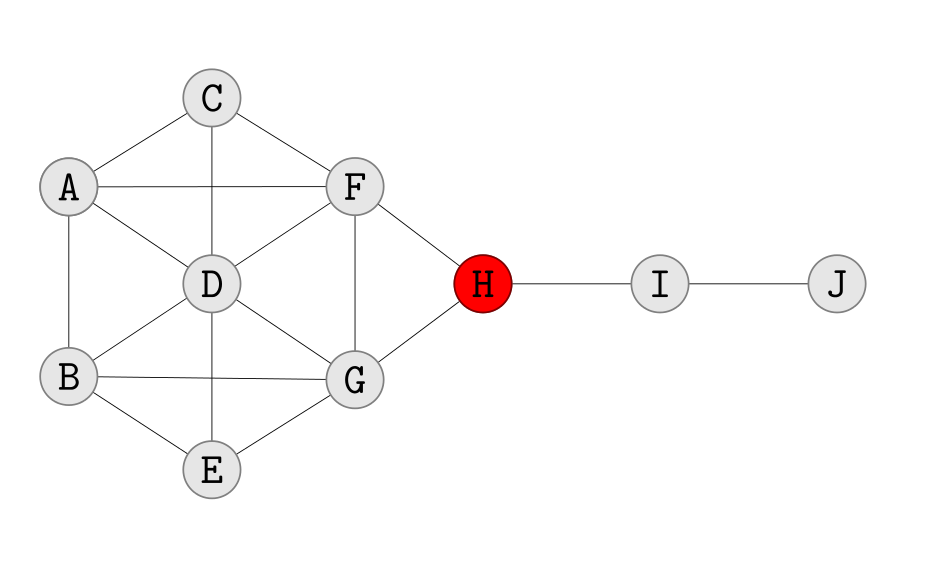

Organizational Network Analysis
Aspectos Psicosociales…
Juan Muñoz
Universitat Autònoma de Barcelona
http:/juan.psicologiasocial.eu

El Análisis de Redes Sociales
La idea de red reside en el hecho de que cada individuo mantiene ligamenes con otros individuos, cada uno de los cuales está a su vez ligado a otros, y así sucesivamente. La estructura relacional de un grupo (…) consiste en las pautas de relaciones entre los actores.
Rodríguez (1995, p. 11)
La estructura de relaciones entre actores y la ubicación en la red de actores individuales tiene importantes consecuencias conductuales, perceptivas y actitudinales tanto para las unidades individuales como para el sistema en su conjunto.
Knoke & Kuklinsky (1982, p. 13)
Orígenes: J.L. Moreno
Redes de comunicación
El mundo es un pañuelo

Western Electric

Nodos y relaciones
- Nodos
- Personas
- Ordenadores
- Empresas
- Aeropuertos
- Relaciones
- Amistad
- Parentesco
- Colaboración
- Reconocimiento
- Intercambio
Grandjean (2016)
¿Qué es?
ONA consiste en el uso del análisis de redes sociales (SNA) para comprender e intervenir en los fenómenos organizativos. Se diferencia de las otras herramientas existentes en que se centra y analiza las interacciones entre los actores, los recursos que transitan dentro de estas interacciones y la estructura social formada por estas interacciones“.
Ribeiro, Macambira, & Neiva (2017, pp. 243–244)
Descubrir la estructura oculta
Si la organización formal es el esqueleto de una empresa, la informal es el sistema nervioso central que impulsa los procesos de pensamiento colectivo, las acciones y las reacciones de sus unidades de negocio.
Krackhardt & Hanson (1993, p. 104)
Capital social
Centralidad
- Grado (Degree)
- Número de nodos de los cuales un determinado nodo es adyacente, con los que está en contacto directo.
- Cercanía (Closeness)
- Suma de las distancias entre el nodo y cada uno de los otros nodos.
- Intermediación (Betwenness)
- Frecuencia con la que un punto está en el camino más corto entre otros pares de puntos.
- Vector propio (Eigenvector)
- Grado en que un nodo está conectado con otros nodos con alto grado (bien conectados).
Centralidad


 

Krackhardt (1990, p. 351)
Roles


Escuelas secundaria holandesas
La fuerza de los lazos débiles

Desvinculación


Inclusividad


Ética
- Anonimato
- Datos perdidos
- Participación voluntaria
- Tipo de preguntas relacionales
Borgatti & Molina (2003)


Referencias
Bavelas, A. (1950). Communication patterns in task-oriented groups. The Journal of the Acoustical Society of America, 22(6), 725–730. Retrieved from http://pdfserv.aip.org/JASMAN/vol_22/iss_6/725_1.pdf
Borgatti, S. P., & Molina, J. L. (2003). Ethical and Strategic Issues in Organizational Social Network Analysis. The Journal of Applied Behavioral Science, 39(3), 337–349. Retrieved from https://xpv.uab.cat/doi/10.1177/,DanaInfo=.ajpwurfrzH1krq28qPt65+0021886303258111
Chakrabarti, M. (2018). Ramco Uses Organizational Network Analysis to Improve Sales Effectiveness and Measure Employee Engagement. Deloitte Development LLC.
Cross, R., Parker, A., Prusak, L., & Borgatti, S. P. (2001). Knowing what we know: Supporting knowledge creation and sharing in social networks. Organizational Dynamics, 30(2), 100–120. http://doi.org/10.1016/S0090-2616(01)00046-8
Grandjean, M. (2016, May). Connected World: Untangling the Air Traffic Network. Martin Grandjean. Retrieved from http://www.martingrandjean.ch/connected-world-air-traffic-network/
Knoke, D., & Kuklinsky, J. H. (1982). Network analysis (Vol. 28). London: Sage.
Krackhardt, D. (1990). Assessing the Political Landscape: Structure, Cognition, and Power in Organizations. Administrative Science Quarterly, 35(2), 342–69.
Krackhardt, D., & Hanson, J. R. (1993). Informal networks: The company behind the chart. Harvard Business Review, 71, 104–111.
McGregor, L. (n.d.). Organizational network analysis. Deloitte United States. Retrieved from https://www2.deloitte.com/us/en/pages/human-capital/articles/organizational-network-analysis.html
Milgram, S. (1967). The small world problem. Psychology Today, 67(1), 60–67.
Moreno, J. L. (1934). Who Shall Survive: A New Approach to the Problem of Human Interrelations. Washington DC: Nervous; Mental Disease Publishing Co. Retrieved from http://archive.org/details/whoshallsurviven00jlmo
Newman, G. (2017). Retain or let go? The data that you need to react correctly when an employee resigns. Linkedin. Retrieved from https://www.linkedin.com/pulse/retain-release-data-you-need-react-correctly-when-employee-newman
Parise, S., Cross, R., & Davenport, T. H. (2005). It’s Not What But Who You Know: How Organizational Network Analysis Can Help Address Knowledge Loss Crises. In.
Ribeiro, E., Macambira, M., & Neiva, E. R. (2017). Social Network Analysis in Organizations as a Management Support Tool. In E. R. Neiva, C. V. Torres, & H. Mendonça (Eds.), Organizational Psychology and Evidence-Based Management: What Science Says About Practice (pp. 243–265). Cham: Springer International Publishing. http://doi.org/10.1007/978-3-319-64304-5_13
Rodríguez, J. A. (1995). Análisis estructural y de redes. Madrid: Centro de Investigaciones Sociológicas.
Roethlisberger, F. J., & Dickson, W. J. (1939). Management and the worker. Cambridge, Mass.: Harvard University Press. Retrieved from http://archive.org/details/managementworker00roet
Yamkovenko, B., & Tavares, S. (2017). To Understand Whether Your Company Is Inclusive, Map How Your Employees Interact. Harvard Business Review. Retrieved from https://hbr.org/2017/07/to-understand-whether-your-company-is-inclusive-map-how-your-employees-interact
Zwijze-Koning, K. H., & Jong, M. D. T. de. (2015). Network Analysis as a Communication Audit Instrument: Uncovering Communicative Strengths and Weaknesses Within Organizations. Journal of Business and Technical Communication, 29(1), 36–60. http://doi.org/10.1177/1050651914535931